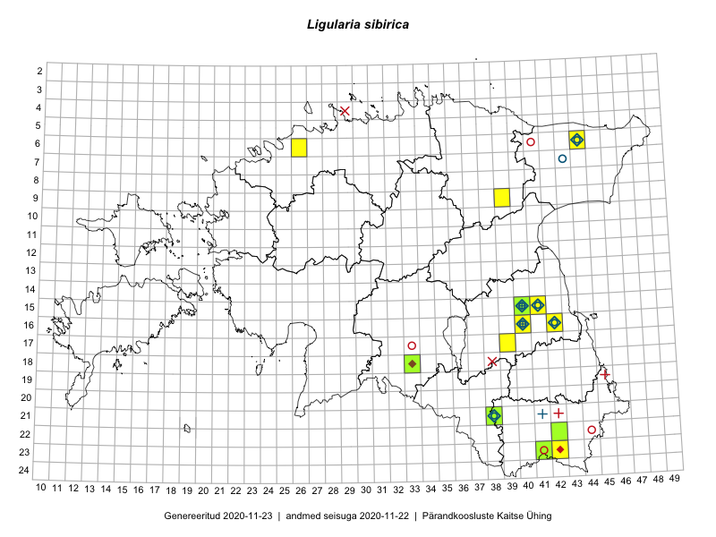

Ligularia sibirica — harilik kobarpea
Asteraceae :: Ligularia sibirica (L.) Cass. (117)

Kaart põhineb 123 kirjel:
vaatlusi 32
herbaareksemplare 85
ELFi kirjeid1 6
Taime kaasaegsed ja ajaloolised leiukohad asuvad 14 ruudus.
Tingmärgid ja ruutude arvud periooditi (U2 / V3 )
█ 2006–2020 (12/–)
◆/◇ 1971–2005 (6/8)
○ 1921–1970 (7/4)
+ kuni 1920 (3/2)
× hävinud (–/3)
? kaheldav (–/0)
| Ruut | Leidja(d) | Leiuaeg | Kirje |
|---|---|---|---|
| 06-44 | 1982-07-07 | ruut/ala: Ligularia sibirica (L.) Cass. | |
| 16-40 | Glehn | 1860–1938 | ruut/ala: Ligularia sibirica (L.) Cass. |
| 16-40 | Linda Viljasoo, Maret Kask, A. Remmel | 1947–1981 | ruut/ala: Ligularia sibirica (L.) Cass. |
| 16-40 | Maret Kask | 1979-08-28 | ruut/ala: Ligularia sibirica (L.) Cass. |
| 21-38 | Maret Kask | 1969-06-17 | ruut/ala: Ligularia sibirica (L.) Cass. |
| 15-41 | Thea Kull | 2015-06-21–2015-07-28 | ruut/ala: Ligularia sibirica (L.) Cass. |
| 15-41 | Thea Kull | 2015-06-21 | ruut/ala: Ligularia sibirica (L.) Cass. |
| 15-40 | Thea Kull | 2015-06-15 | ruut/ala: Ligularia sibirica (L.) Cass. |
| 15-40 | Thea Kull | 2015-06-21 | ruut/ala: Ligularia sibirica (L.) Cass. |
| 23-41 | Sander Laherand, Ott Luuk, Susanna Vain | 2016-06-15 | ruut/ala: Ligularia sibirica (L.) Cass. |
| 09-39 | Ott Luuk, Eerik Leibak | 2016-08-09 | ruut/ala: Ligularia sibirica (L.) Cass. |
| 15-41 | Kaire Lanno, Indrek Melts | 2016-08-21 | ruut/ala: Ligularia sibirica (L.) Cass. |
| 15-41 | Kaire Lanno, Indrek Melts | 2016-08-21 | ruut/ala: Ligularia sibirica (L.) Cass. |
| 15-40 | Kaire Lanno, Indrek Melts | 2016-08-21 | ruut/ala: Ligularia sibirica (L.) Cass. |
| 15-40 | Kaire Lanno, Indrek Melts | 2016-08-21 | ruut/ala: Ligularia sibirica (L.) Cass. |
| 16-42 | Kaire Lanno, Indrek Melts | 2016-08-24 | ruut/ala: Ligularia sibirica (L.) Cass. |
| 06-26 | Ulvi Selgis | 2016-07-16 | ruut/ala: Ligularia sibirica (L.) Cass. |
| 23-41 | Ott Luuk, Sander Laherand, Susanna Vain | 2016-06-15 | ruut/ala: Ligularia sibirica (L.) Cass. |
| 23-41 | Ott Luuk, Sander Laherand, Susanna Vain | 2016-06-15 | ruut/ala: Ligularia sibirica (L.) Cass. |
| 23-41 | Ott Luuk, Sander Laherand, Susanna Vain | 2016-06-15 | ruut/ala: Ligularia sibirica (L.) Cass. |
| 23-41 | Ott Luuk, Sander Laherand, Susanna Vain | 2016-06-15 | ruut/ala: Ligularia sibirica (L.) Cass. |
| 23-41 | Ott Luuk, Sander Laherand, Susanna Vain | 2016-06-15 | ruut/ala: Ligularia sibirica (L.) Cass. |
| 23-41 | Ott Luuk, Sander Laherand, Susanna Vain | 2016-06-15 | ruut/ala: Ligularia sibirica (L.) Cass. |
| 23-41 | Ott Luuk, Sander Laherand, Susanna Vain | 2016-06-15 | ruut/ala: Ligularia sibirica (L.) Cass. |
| 09-39 | Ott Luuk, Eerik Leibak | 2016-08-09 | ruut/ala: Ligularia sibirica (L.) Cass. |
| 09-39 | Ott Luuk, Eerik Leibak | 2016-08-09 | ruut/ala: Ligularia sibirica (L.) Cass. |
| 09-39 | Ott Luuk, Eerik Leibak | 2016-08-09 | ruut/ala: Ligularia sibirica (L.) Cass. |
| 06-44 | Ott Luuk, Meeli Mesipuu | 2019-09-11 | ruut/ala: Ligularia sibirica (L.) Cass. |
| 06-44 | Meeli Mesipuu, Ott Luuk | 2019-09-11 | ruut/ala: Ligularia sibirica (L.) Cass. |
| 23-42 | Kaire Lanno | 2011 | ruut/ala: Ligularia sibirica (L.) Cass. |
| 16-40 | Thea Kull | 2009-08-25 | ruut/ala: Ligularia sibirica (L.) Cass. |
| 18-33 | Thea Kull | 2009-08-18 | ruut/ala: Ligularia sibirica (L.) Cass. |
| 15-41 | S. Asu | 1980-07-31 | TU250667: Ligularia sibirica (L.) Cass. |
| 16-40 | A. Remmel | 1965-08-08 | TU250668: Ligularia sibirica (L.) Cass. |
| 15-40 | Albert Üksip | 1936-08-18 | TU250669: Ligularia sibirica (L.) Cass. |
| 16-40 | Albert Üksip | 1936-08-12 | TU250670: Ligularia sibirica (L.) Cass. |
| 15-40 | Albert Üksip | 1936-08-18 | TU250671: Ligularia sibirica (L.) Cass. |
| 15-40 | P. Glehn | 1857-07-17 | TU250672: Ligularia sibirica (L.) Cass. |
| 15-40 | P. Glehn | 1857-07-17 | TU250674: Ligularia sibirica (L.) Cass. |
| 16-40 | P. Glehn | 1856 | TU250675: Ligularia sibirica (L.) Cass. |
| 21-38 | L. Pihlapuu | 1969-06-17 | TU250676: Ligularia sibirica (L.) Cass. |
| 16-40 | A. Remmel | 1965-08-08 | TU250677: Ligularia sibirica (L.) Cass. |
| 16-40 | H. Hiir | 1878 | TU250678: Ligularia sibirica (L.) Cass. |
| 16-40 | A. Remmel | 1965-08-08 | TU250679: Ligularia sibirica (L.) Cass. |
| 15-41 | L. Pihlapuu | 1967-06-20 | TU250680: Ligularia sibirica (L.) Cass. |
| 16-40 | A. Remmel | 1965-08-08 | TU250681: Ligularia sibirica (L.) Cass. |
| 16-40 | A. Remmel | 1965-08-08 | TU250682: Ligularia sibirica (L.) Cass. |
| 07-43 | Joh. Precht | 1938-07-17 | TU250685: Ligularia sibirica (L.) Cass. |
| 07-43 | Joh. Precht | 1938-07-17 | TU250686: Ligularia sibirica (L.) Cass. |
| 16-40 | A. Remmel | 1956-07-30 | TU250687: Ligularia sibirica (L.) Cass. |
| 16-40 | Karl Eichwald | 1948-07-20 | TU250688: Ligularia sibirica (L.) Cass. |
| 16-40 | Karl Eichwald | 1947-08-10 | TU250689: Ligularia sibirica (L.) Cass. |
| 16-40 | P. Glehn | 1857-08-08 | TU250690: Ligularia sibirica (L.) Cass. |
| 16-40 | Albert Üksip | 1936-08-12 | TU250691: Ligularia sibirica (L.) Cass. |
| 16-40 | P. Glehn | 1856 | TU250692: Ligularia sibirica (L.) Cass. |
| 15-41 | L. Pihlapuu | 1967-06-20 | TU250694: Ligularia sibirica (L.) Cass. |
| 21-38 | L. Pihlapuu | 1969-06-17 | TU250695: Ligularia sibirica (L.) Cass. |
| 21-41 | H. Hiir | 1910-07 | TU250683: Ligularia sibirica (L.) Cass. |
| 21-41 | H. Hiir | 1900 | TU250684: Ligularia sibirica (L.) Cass. |
| 15-40 | 1857-08-22 | TU261878: Ligularia sibirica (L.) Cass. | |
| 21-38 | Marek Sammul | 2001-07-16 | TAA0001451: Ligularia sibirica (L.) Cass. |
| 06-44 | Vilma Kuusk | 1961-06-15 | TAA0001452: Ligularia sibirica (L.) Cass. |
| 07-43 | Maret Kask | 1969-06-19 | TAA0001453: Ligularia sibirica (L.) Cass. |
| 16-40 | Maret Kask, Linda Viljasoo | 1974-06-05 | TAA0001454: Ligularia sibirica (L.) Cass. |
| 16-40 | Linda Viljasoo | 1981-09-03 | TAA0001455: Ligularia sibirica (L.) Cass. |
| 15-40 | Maret Kask | 1969-11-13 | TAA0001456: Ligularia sibirica (L.) Cass. |
| 06-44 | Linda Viljasoo | 1969-06-20 | TAA0001457: Ligularia sibirica (L.) Cass. |
| 06-44 | Linda Viljasoo | 1969-06-20 | TAA0001458: Ligularia sibirica (L.) Cass. |
| 06-44 | Linda Viljasoo | 1974-08-01 | TAA0001459: Ligularia sibirica (L.) Cass. |
| 06-44 | Liivia Laasimer | 1970-06-25 | TAA0001461: Ligularia sibirica (L.) Cass. |
| 06-44 | Vilma Kuusk | 1961-06-15 | TAA0001462: Ligularia sibirica (L.) Cass. |
| 16-40 | Linda Viljasoo | 1961-10-03 | TAA0001463: Ligularia sibirica (L.) Cass. |
| 16-40 | Maret Kask | 1969 | TAA0001464: Ligularia sibirica (L.) Cass. |
| 16-40 | Heljo Krall | 2001-07-11 | TAA0001465: Ligularia sibirica (L.) Cass. |
| 16-42 | Oivo Rahusoo | 1968-07-31 | TAA0001466: Ligularia sibirica (L.) Cass. |
| 21-38 | Maret Kask | 1969-06-17 | TAA0001467: Ligularia sibirica (L.) Cass. |
| 21-38 | Maret Kask | 1969-06-17 | TAA0001468: Ligularia sibirica (L.) Cass. |
| 21-38 | Maret Kask | 1969-06-17 | TAA0001469: Ligularia sibirica (L.) Cass. |
| 21-38 | Maret Kask | 1969-06-17 | TAA0001470: Ligularia sibirica (L.) Cass. |
| 21-38 | Maret Kask, Ella Tammemägi | 1957-08-13 | TAA0001471: Ligularia sibirica (L.) Cass. |
| 21-38 | Maret Kask, Ella Tammemägi | 1957-08-13 | TAA0001472: Ligularia sibirica (L.) Cass. |
| 21-38 | Maret Kask, Ella Tammemägi | 1957-08-13 | TAA0001473: Ligularia sibirica (L.) Cass. |
| 21-38 | Maret Kask, Ella Tammemägi | 1957-08-13 | TAA0001474: Ligularia sibirica (L.) Cass. |
| 21-38 | Marek Sammul | 2001-08-25 | TAA0001475: Ligularia sibirica (L.) Cass. |
| 21-38 | Marek Sammul | 2001-08-25 | TAA0001476: Ligularia sibirica (L.) Cass. |
| 21-38 | Marek Sammul | 2001-08-25 | TAA0001477: Ligularia sibirica (L.) Cass. |
| 21-38 | Maret Kask, Ella Tammemägi | 1957-08-13 | TAA0001478: Ligularia sibirica (L.) Cass. |
| 15-40 | Marek Sammul | 2001-09-20 | TAA0002692: Ligularia sibirica (L.) Cass. |
| 16-40 | H. Sogenbits | 1925-07-05 | TU266982: Ligularia sibirica (L.) Cass. |
| 06-44 | Õie Jaagomäe | 1979-08-09 | TAM0005352: Ligularia sibirica (L.) Cass. |
| 06-44 | Õie Jaagomäe | 1979-08-09 | TAM0005353: Ligularia sibirica (L.) Cass. |
| 06-44 | Õie Jaagomäe | 1979-08-09 | TAM0005354: Ligularia sibirica (L.) Cass. |
| 16-40 | A. Üksip | 1936-08-12 | TAM0005389: Ligularia sibirica (L.) Cass. |
| 06-44 | Õie Jaagomäe | 1979-08-09 | TAM0073806: Ligularia sibirica (L.) Cass. |
| 15-40 | Marek Sammul | 2008-08-14 | TAA0078345: Ligularia sibirica (L.) Cass. |
| 15-40 | Marek Sammul | 2008-08-14 | TAA0078346: Ligularia sibirica (L.) Cass. |
| 15-40 | Marek Sammul | 2008-08-14 | TAA0078347: Ligularia sibirica (L.) Cass. |
| 15-40 | Marek Sammul | 2008-08-14 | TAA0078348: Ligularia sibirica (L.) Cass. |
| 15-40 | Marek Sammul | 2008-08-14 | TAA0078349: Ligularia sibirica (L.) Cass. |
| 21-38 | Kaire Lanno, Marek Sammul | 2008-08-16 | TAA0076957: Ligularia sibirica (L.) Cass. |
| 21-38 | Kaire Lanno, Marek Sammul | 2008-08-16 | TAA0076958: Ligularia sibirica (L.) Cass. |
| 21-38 | Kaire Lanno, Marek Sammul | 2008-08-16 | TAA0076959: Ligularia sibirica (L.) Cass. |
| 21-38 | Kaire Lanno, Marek Sammul | 2008-08-16 | TAA0076960: Ligularia sibirica (L.) Cass. |
| 21-38 | Kaire Lanno, Marek Sammul | 2008-08-16 | TAA0076961: Ligularia sibirica (L.) Cass. |
| 21-38 | Kaire Lanno, Marek Sammul | 2008-08-16 | TAA0076962: Ligularia sibirica (L.) Cass. |
| 21-38 | Kaire Lanno, Marek Sammul | 2008-08-16 | TAA0076963: Ligularia sibirica (L.) Cass. |
| 21-38 | Kaire Lanno, Marek Sammul | 2008-08-16 | TAA0076964: Ligularia sibirica (L.) Cass. |
| 22-42 | Kaire Lanno | 2009-08-24 | TAA0077672: Ligularia sibirica (L.) Cass. |
| 22-42 | Kaire Lanno | 2009-08-24 | TAA0077673: Ligularia sibirica (L.) Cass. |
| 22-42 | Marek Sammul | 2009-08-24 | TAA0077674: Ligularia sibirica (L.) Cass. |
| 22-42 | Marek Sammul | 2009-08-24 | TAA0077675: Ligularia sibirica (L.) Cass. |
| 16-40 | P. Glehn | TAM0115216: Ligularia sibirica (L.) Cass. | |
| 16-40 | A. Bruhns | 1860 | TAM0115217: Ligularia sibirica (L.) Cass. |
| 16-40 | TAM0115218: Ligularia sibirica (L.) Cass. | ||
| 15-40 | 1857-07-22 | TAM0115219: Ligularia sibirica (L.) Cass. | |
| 23-41 | Kaili Kattai, Kaire Lanno | 2011-09-01 | TAA0112591: Ligularia sibirica (L.) Cass. |
| 23-41 | Kaili Kattai, Kaire Lanno | 2011-09-01 | TAA0112592: Ligularia sibirica (L.) Cass. |
| 18-33 | Hille Lapp, Maria Abakumova | 1995-07 | ELF: 4618 |
| 09-39 | Alar Soppe | 2009-08-06 | ELF: 13434 |
| 23-41 | Meelis Sepp, Liis Kuresoo | 2009-07-01 | ELF: 13013 |
| 22-42 | Meelis Sepp | 2010-09-10 | ELF: 15292 |
| 23-41 | Kaire Lanno | 2011-08 | ELF: 13013 |
| 09-39 | Ott Luuk, Eerik Leibak | 2016-08-09 | ELF: 13434 |
Eestimaa Looduse Fondi (ELF) andmebaas sisaldab inventeeritud koosluste kirjeldusi ja liigiloendeid. Eriti rohkesti on andmeid märgalade kohta.↩︎
Ruutude arv uue atlase andmekogu järgi. Muuhulgas arvestab vanemat herbaariumi, 2005. aasta atlase välitöölehtedelt uuesti digitaliseeritud andmeid jne. Uue atlase andmekogust pärinevad andmed on kaardile kantud siniste sümbolitega.↩︎
Ruutude arv 2005. aasta atlase (Kukk, T., Kull, T., Eesti taimede levikuatlas. Eesti Maaülikool, Põllumajandus- ja Keskkonnainstituut, Tartu, 2005) järgi. Andmeallikana on kasutatud levik.exe programmi, kus igas ruudus on registreeritud vaid uusim leid. Seetõttu on vanemate perioodide kohta andmed puudulikud. Kasutatud levik.exe andmestikus leidub mõningaid kõrvalekaldeid atlase trükis ilmunud versioonist, sagedamini tarnade ja käpaliste seas. Lisaks leidub selles andmestikus valik liike (peamiselt väheste leidudega tulnuktaimed), mille kaarte trükis ei avaldatud. Vana atlase andmed ruutudest, milles ei ole uue atlase andmekogus leide enne 2006. aastat, on kaardil esitatud punaste sümbolitega. Vana atlase andmetel hävinud ja kaheldavaid leiukohti pole hilisemate (taas)leidude põhjal korrigeeritud.↩︎